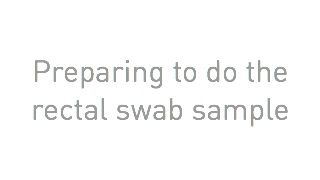
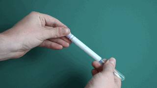
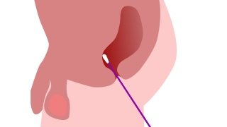
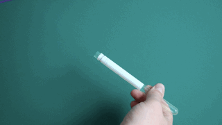

<div class="slideshow"
     data-pagination="false"
     data-transition="scroll"
     data-speed="300"
     data-auto="false"
     data-skip="true">
  <ul class="carousel">
    <li class="slide">
      
      <div class="slide-content">
        <h1>
          Preparation
        </h1>
        <p>
          It's best to do this sample in a bathroom. It might be easier by resting one foot on the edge of the bath or toilet to assist with using the swab.
        </p>
      </div>
    </li>
    <li class="slide">
      
      <div class="slide-content">
        <h1>
          Getting ready
        </h1>
         <ol>
          <li>Remove the swab from the packaging</li>
          <li>Keep the packaging</li>
        </ol>
      </div>
    </li>
    <li class="slide">
      
      <div class="slide-content">
        <h1>
          How to do take the swab sample
        </h1>
        <ul>
          <li>It may help to moist the tip of the swab in clean water</li>
          <li>Insert the swab into the rectum about 2 inches and gently rotate for 10 seconds</li>
          <li>Carefully remove the swab</li>
        </ul>
      </div>
    </li>
    <li class="slide">
      
      <div class="slide-content">
        <h1>
          Replace the swab in it's original continer
        </h1>
        <ol>
          <li>Without putting down the swab or touching it against any surfaces return the swab to the original packaging</li>
          <li>Ensure the swab is container is completely closed</li>
        </ol>
      </div>
    </li>
  </ul>
</div>
